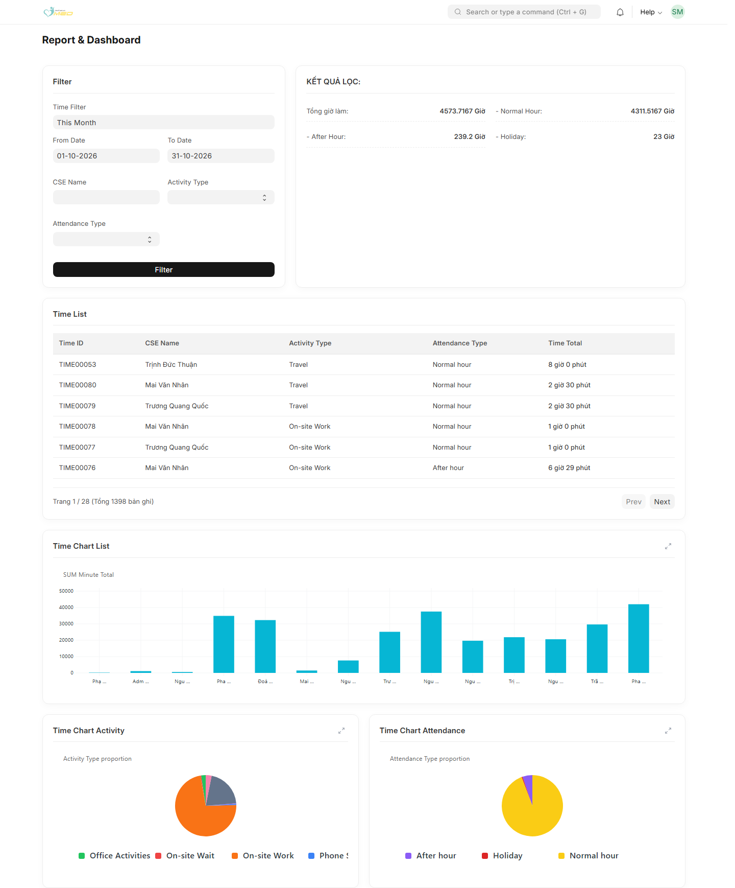
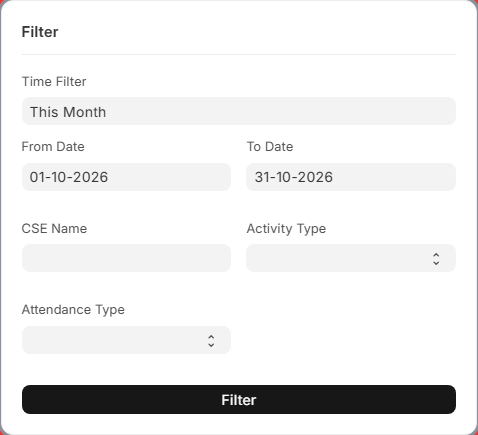
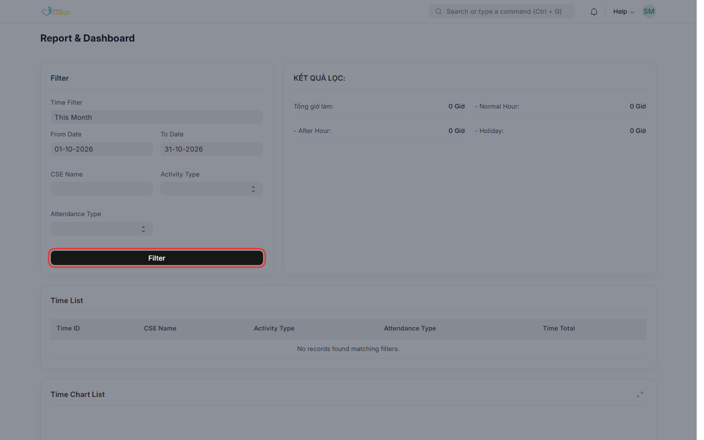
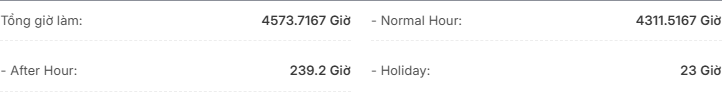
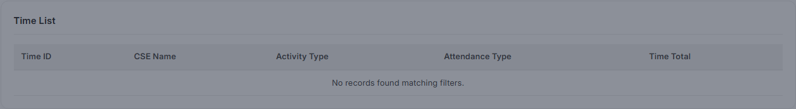

Mục đích
Service Time Report (tiêu đề trên màn hình: Report & Dashboard) giúp lãnh đạo dịch vụ theo dõi thời gian làm việc mà kỹ sư (CSE) ghi nhận trên các bản ghi Service Time: tổng giờ, phân loại theo giờ hành chính / ngoài giờ / ngày lễ, và phân bổ theo loại hoạt động.
Trang gồm: Filter, khối KẾT QUẢ LỌC, bảng Time List, và ba biểu đồ: Time Chart List, Time Chart Activity, Time Chart Attendance.
Khái niệm: Service Time và thời lượng
Mỗi dòng Service Time là một khoảng thời gian làm việc do CSE nhập (thường gắn với Service Job), với:
- Start / End — thời điểm bắt đầu và kết thúc;
- CSE Name — kỹ sư thực hiện;
- Activity Type — loại hoạt động (Travel, On-site Work, …);
- Attendance Type — loại giờ: Normal hour, After hour, Holiday.
Thời lượng của mỗi bản ghi = số phút giữa Start và End (chỉ tính khi cả hai có giá trị và End ≥ Start). Bản ghi thiếu giờ hoặc End trước Start được tính 0 phút.
Trên báo cáo, tổng hợp quy ra giờ (số thập phân + chữ Giờ trên màn hình). Cột Time Total trên Time List hiển thị dạng đọc được (ví dụ 2 giờ 30 phút).
Trước khi bắt đầu
- Đã đăng nhập ERP
- Vai trò iMED Service Leader hoặc iMED Service Manager
- Đã có bản ghi Service Time với Start/End hợp lệ trên hệ thống
Các bước thực hiện
Bước 1: Mở Service Time Report
Tìm Service Time Report trên Desk hoặc mở /app/service_time_report.

Bước 2: Thiết lập bộ lọc

| Thành phần | Mô tả |
|---|---|
| Preset kỳ (ví dụ This Month) | Điền nhanh From Date và To Date. |
| From Date / To Date | Lọc theo trường Start của Service Time (thời điểm bắt đầu nằm trong khoảng ngày, tính cả 00:00:00–23:59:59). |
| CSE Name | Chỉ xem giờ của một kỹ sư (user thuộc nhóm vai trò dịch vụ). |
| Activity Type | Travel, On-site Work, On-site Wait, Phone Support, Support, Office Activities, Workshop/Conference. |
| Attendance Type | Normal hour, After hour, Holiday. |
| Filter | Áp dụng lọc cho metrics, biểu đồ và Time List (về trang 1). |
Bước 3: Nhấn Filter

Bước 4: Đọc KẾT QUẢ LỌC

Chi tiết từng chỉ số: mục Giải thích metrics.
Bước 5: Xem Time List
Bảng liệt kê từng bản ghi Service Time thỏa lọc, sắp xếp theo Start mới nhất trước.

- Dùng Prev / Next khi có hơn 50 bản ghi.
- Nhấn Time ID (nếu có link) để mở chi tiết bản ghi trên ERP.
Bước 6: Xem biểu đồ
Ba biểu đồ dùng cùng bộ lọc. Di chuột lên cột hoặc lát pie để xem tooltip (giờ + phút). Nút mở rộng góc phải mỗi thẻ → xem fullscreen.
Time Chart List — tổng thời gian theo từng CSE.
Time Chart Activity — tỷ lệ thời gian theo Activity Type.
Time Chart Attendance — tỷ lệ theo Normal / After / Holiday.

Giải thích chi tiết: Giải thích biểu đồ.
Giải thích metrics (KẾT QUẢ LỌC)
Tất cả chỉ số là tổng thời lượng (quy đổi từ phút sang giờ) của các bản ghi Service Time thỏa bộ lọc. Công thức phút: chênh lệch Start → End; bản ghi không hợp lệ = 0 phút.
| Hiển thị trên màn hình | Cách tính | Gợi ý đọc |
|---|---|---|
| Tổng giờ làm | Tổng phút của mọi bản ghi thỏa lọc ÷ 60, hiển thị kèm chữ Giờ (có thể là số thập phân, ví dụ 12.5 Giờ). | Tổng thời gian làm việc trong kỳ và điều kiện đã chọn. |
| - Normal Hour | Tổng phút các bản ghi có Attendance Type = Normal hour ÷ 60. | Giờ hành chính / giờ bình thường. |
| - After Hour | Tổng phút với Attendance Type = After hour ÷ 60. | Giờ ngoài giờ (tăng ca). |
| - Holiday | Tổng phút với Attendance Type = Holiday ÷ 60. | Giờ làm ngày lễ. |
Metrics vs Time List
- Metrics = cộng dồn toàn bộ bản ghi thỏa lọc.
- Time List = từng dòng (tối đa 50/trang); cộng Time Total trên tất cả trang phải khớp tổng phút (trừ làm tròn hiển thị).
Giải thích biểu đồ
Biểu đồ dùng cùng bộ lọc với KẾT QUẢ LỌC. Giá trị gốc trên server là phút; tooltip hiển thị dạng X.XX giờ (Y phút). Không có dữ liệu → No data for chart.
| Biểu đồ | Loại | Nhóm theo | Ý nghĩa |
|---|---|---|---|
| Time Chart List | Cột (bar) | CSE Name (tên đầy đủ trên legend) | So sánh tổng thời gian từng kỹ sư trong tập đã lọc. Tiêu đề dataset: SUM Minute Total. Trục Y = phút; tooltip quy sang giờ. |
| Time Chart Activity | Tròn (pie) | Activity Type | Phân bổ thời gian theo loại hoạt động (Travel, On-site Work, …). Mỗi lát = tổng phút của loại đó. Chỉ hiện các loại có dữ liệu trong kỳ lọc. |
| Time Chart Attendance | Tròn (pie) | Attendance Type | Phân bổ Normal hour / After hour / Holiday. Tổng các lát (quy ra giờ) khớp với Tổng giờ làm và với ba dòng Normal / After / Holiday trên metrics. |
So sánh metrics và biểu đồ
- Time Chart Attendance ↔ ba chỉ số Normal Hour, After Hour, Holiday trên KẾT QUẢ LỌC (cùng cách cộng phút).
- Time Chart Activity ↔ phân rã theo hình thức công việc; không có dòng tương ứng riêng trên khối metrics (chỉ xem qua biểu đồ hoặc lọc Activity Type).
- Time Chart List ↔ phân rã theo CSE; khi lọc một CSE Name cụ thể, biểu đồ thường chỉ còn một cột.
Phân quyền theo vai trò
| Vai trò | Truy cập Service Time Report |
|---|---|
| iMED Service Manager | Có |
| iMED Service Leader | Có |
| iMED Service User | Không |
| Administrator | Có |
Báo cáo công việc theo phiếu: xem thêm Service Job Report.
Kết quả mong đợi
Sau khi nhấn Filter:
- KẾT QUẢ LỌC, Time List (trang 1) và ba biểu đồ đồng bộ một tập bản ghi.
- Time List: 50 dòng/trang, sắp xếp Start giảm dần.
- Không có dữ liệu: metrics = 0 Giờ; biểu đồ trống; bảng không có dòng.
Xử lý sự cố thường gặp
| Triệu chứng | Nguyên nhân có thể | Cách xử lý |
|---|---|---|
| Không mở được trang | Thiếu vai trò Leader/Manager | Liên hệ quản trị gán đúng vai trò |
| Tổng giờ = 0 nhưng có Service Time | Start/End trống hoặc End < Start; hoặc Start ngoài khoảng From/To | Sửa bản ghi; mở rộng From Date / To Date |
| Metrics không đổi | Chưa nhấn Filter | Nhấn Filter sau khi đổi ngày hoặc loại |
| Pie Attendance ≠ cộng tay Normal+After+Holiday | Làm tròn hiển thị giờ | Dùng tooltip phút trên biểu đồ hoặc xem Time List |
| Biểu đồ No data | Lọc quá hẹp | Bỏ Activity/Attendance/CSE hoặc nới ngày |
| Time List trống, metrics > 0 | Đang ở trang pagination sai | Nhấn Filter lại hoặc Prev về trang 1 |